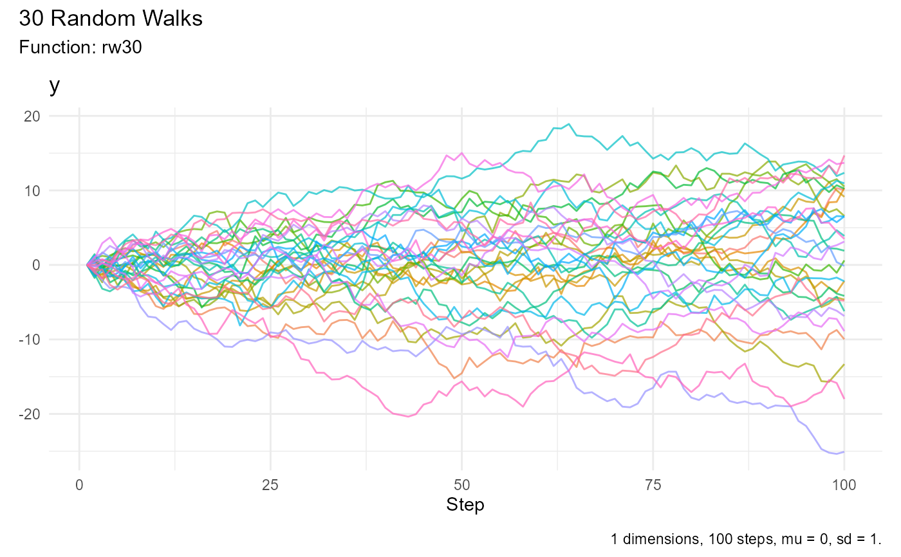

Generate Random Walks
Value
A tibble in long format with columns walk, x, and value,
representing the random walks. Additionally, attributes num_walks,
num_steps, mu, and sd are attached to the tibble.
Details
The function generates random walks using the normal distribution with a
specified mean (mu) and standard deviation (sd).
Each walk is generated independently and stored in a tibble. The resulting
tibble is then pivoted into a long format for easier analysis.
Author
Steven P. Sanderson II, MPH
This function generates 30 random walks with 100 steps each and pivots the result into a long format tibble.
Examples
library(ggplot2)
# Generate random walks and print the result
set.seed(123)
rw30()
#> # A tibble: 3,000 × 3
#> walk_number x y
#> <fct> <int> <dbl>
#> 1 1 1 0
#> 2 1 2 -0.560
#> 3 1 3 -0.791
#> 4 1 4 0.768
#> 5 1 5 0.839
#> 6 1 6 0.968
#> 7 1 7 2.68
#> 8 1 8 3.14
#> 9 1 9 1.88
#> 10 1 10 1.19
#> # ℹ 2,990 more rows
set.seed(123)
rw30() |>
ggplot(aes(x = x, y = y, color = walk_number, group = walk_number)) +
geom_line() +
theme_minimal() +
theme(legend.position = "none") +
labs(
title = "30 Random Walks",
x = "Step",
y = "Value",
color = "Walk Number"
)
